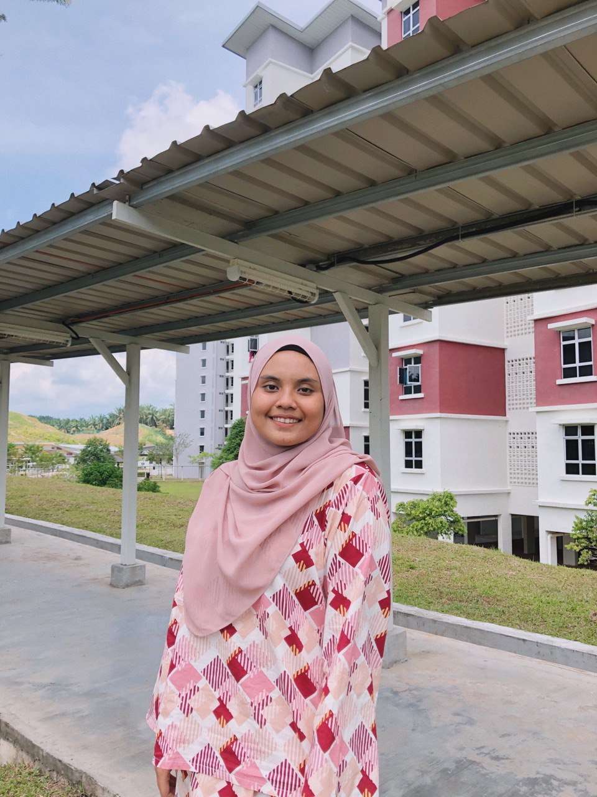
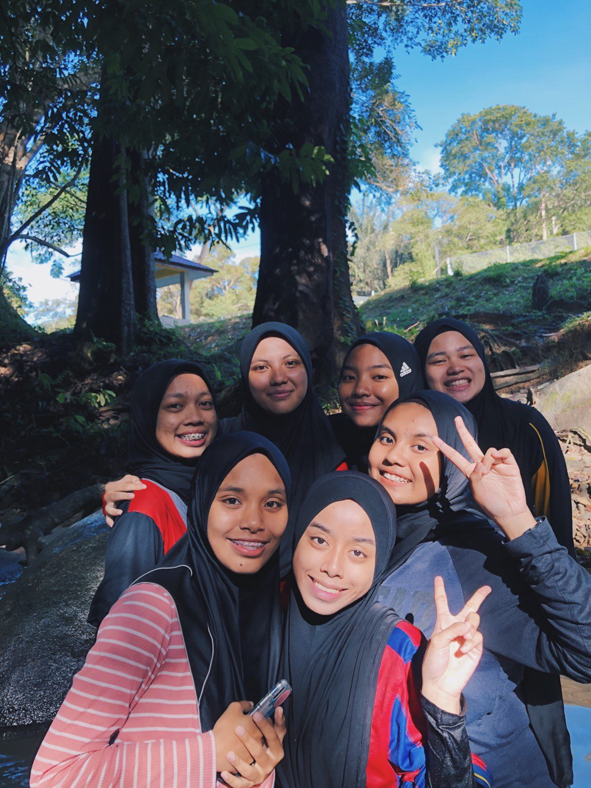
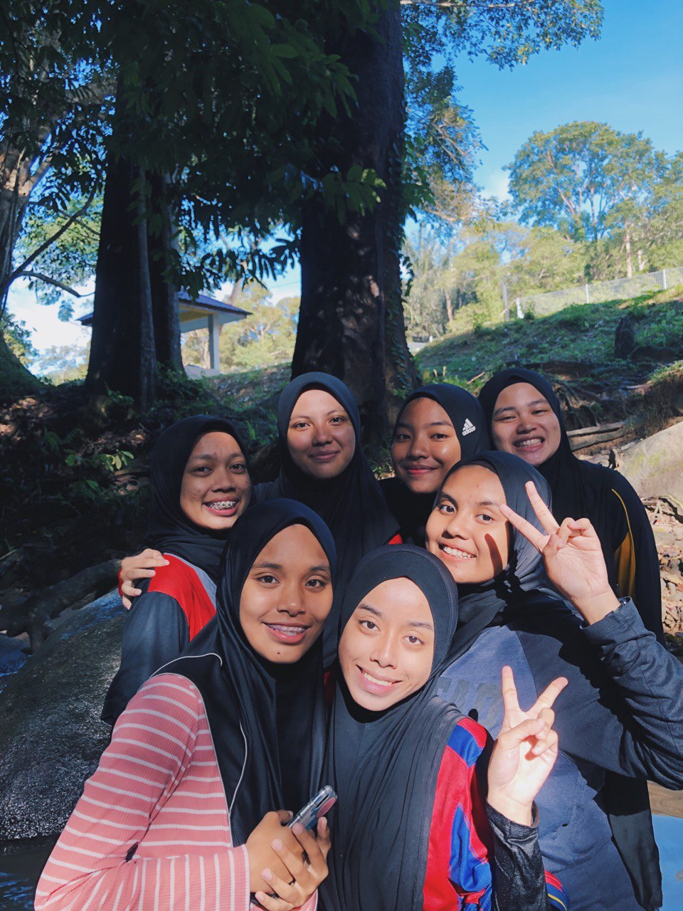

A SLAVE TO ALLAH SWT, A DAUGHTER, A STUDENT
Nur Syazreen Binti Azme
Assalammualaikum and hi peeps! Thank you for spending your time to visit my one and only website. So, the name that been given to me Nur Syazreen Binti Azme, turning 20 on 21st August. I was born in University of Malaya Medical Centre, i have 4 siblings include me as a third child in the family. Got two sister, Nur Syafiqah and Nur Syamira. Also, i have a little brother, Taufeeq Haziem. My dad, Azme bin Ayop who self-employed and my mom, Misliza Binti Badue who work as operator in NXP Sdn Bhd. Both of my parents are such a great persons to me because they taught me a lot about the meaning of real life and they always reminded me that we need to cherish every moment in our life so that we can appreciate every moment and every person who present in our lives. I studied in SK Petaling 1 during primary school and continue my secondary school in SMK Petaling. Then after gradjuating from secondary school, i am further my studies in University of Technology Mara UiTM at Campus Rembau, Negeri Sembilan Darul Khusus. I am studying Diploma in Information Management, currently in part 5. Really had a good time as a student in Rembau, because i get to know a lot of new people, new friends who always brighten my day. Before continue my studies, i had an experience in work at Robinsons in The Garden Mall as a promoter. The company that i worked for is Royal Sporting House Sdn Bhd. It was a great experience for me who first time to work.
Gallery of Syzrnazm.
.jpg) 
